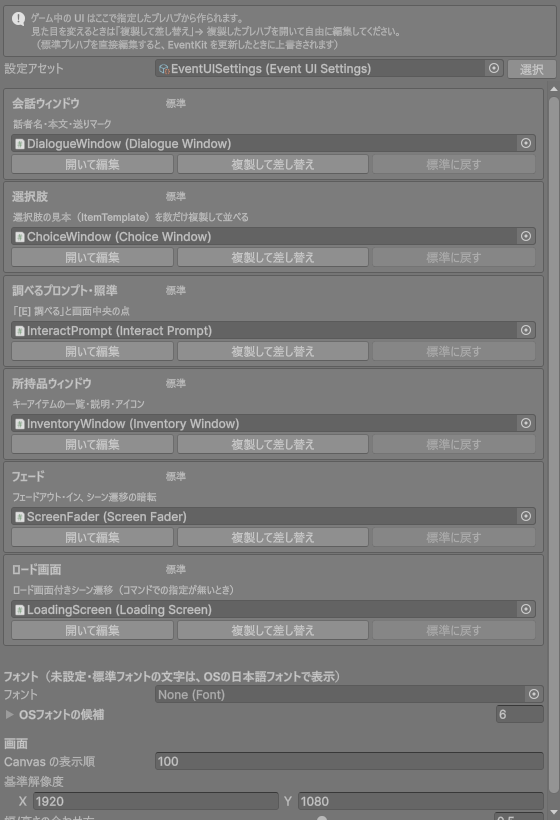
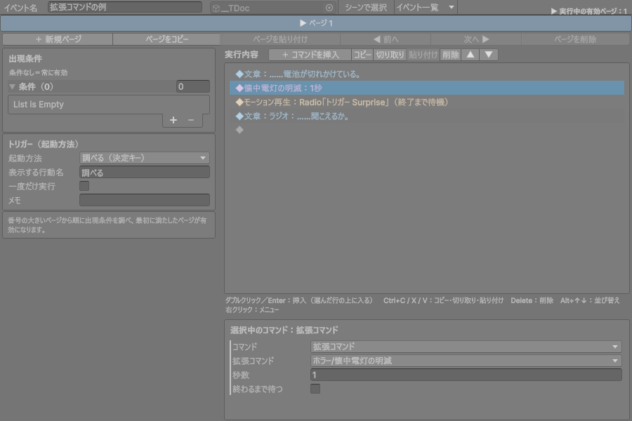
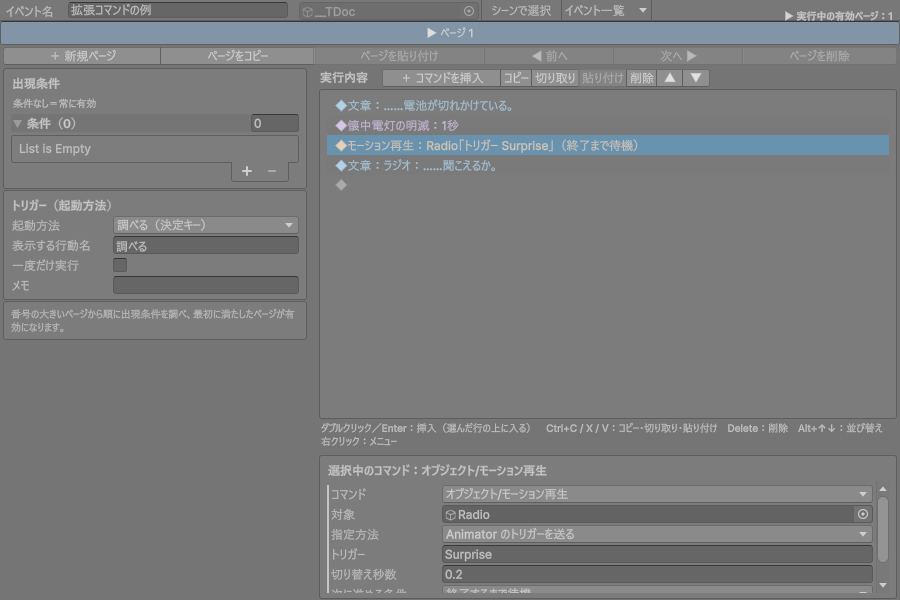

EventKit は、イベント（会話・選択肢・条件分岐・フラグ・アイテム・カメラ演出・シーン遷移…）を
イベントエディタで「上から順に並べて」作れる仕組みです。ジャンルに依存しないので、ホラー以外（アクション・アドベンチャー等）にもそのまま持っていけます。
HorrorKit は EventKit の上に載った「ホラー用の追加パック」です（一人称操作・懐中電灯・ジャンプスケア）。
自分のゲーム用の追加パックも、同じやり方で作れます。
矢印の向きは「左が右を使う」です。EventKit は追加パックやゲームのことを知りません。 そのため EventKit のフォルダだけを別プロジェクトにコピーしても動きます。
| 場所 | 中身 |
|---|---|
EventKit/Runtime | 実行時のスクリプト（アセンブリ EventKit.Runtime）。Core（フラグ・入力・シーン遷移・プレイヤー窓口）／Events（イベント本体・実行）／World（ドア・出現地点）／Player（調べる）／UI |
EventKit/Editor | イベントエディタ・マネージャー・UIプレハブ管理など（アセンブリ EventKit.Editor） |
EventKit/Resources | EventDatabase（アイテム・フラグの定義）、EventUISettings（UIプレハブ管理） |
EventKit/Prefabs/UI | 標準の UI プレハブ（会話・選択肢・プロンプト・所持品・フェード・ロード画面） |
HorrorKit/Scripts | ホラー用の追加パック（アセンブリ HorrorKit.Runtime。EventKit.Runtime を参照） |
HorrorKit/Editor | ホラー用のセットアップ・メニュー |
| メニュー | 内容 |
|---|---|
| EventKit > マネージャー（Ctrl+Shift+H） | アイテム・フラグ・イベント・会話の一括管理 |
| EventKit > イベントエディタ（Ctrl+Shift+E） | イベントの編集（ページ・出現条件・実行内容） |
| EventKit > UIプレハブ管理 | 会話ウィンドウなどの見た目の差し替え |
| EventKit > セットアップ > シーンにイベント基盤を配置 | EventRunner と EventHUD をシーンに置く |
| EventKit > 書き出し | .unitypackage に書き出す（EventKit だけ／追加パック込み） |
| Hierarchy 右クリック > EventKit | 調べるイベント・エリアイベント・振り返り会話・ドア・引き戸・出現地点 |
| Hierarchy 右クリック > HorrorKit | ジャンプスケア・ちらつくライト（ホラー用） |
| 以前 | 今 | 備考 |
|---|---|---|
| HorrorEvent | GameEvent | シーンに置いたイベントはそのまま使えます |
| HorrorDatabase | EventDatabase | Resources/EventDatabase.asset |
| HorrorHUD | EventHUD | 見た目は UIプレハブ管理で変える |
| HorrorInput（の一部） | EventInput | 調べる・会話送り・選択・所持品。視点やダッシュは HorrorInput に残る |
| パッケージ | 用途 | 必須 |
|---|---|---|
| Input System | 調べる・会話送り・選択肢の入力 | 必須 |
| Cinemachine 3 | 視点変更・カメラシェイク | 必須 |
| Unity UI（uGUI） | 会話ウィンドウなど | 必須（標準で入っています） |
| URP | 視点変更のプレビューでポストプロセスを再現 | 任意（無くても動く） |
Assets/_Project/EventKit フォルダを .meta ファイルごと コピーしても構いません。[EventKit Systems]（EventRunner）と [EventKit HUD]（EventHUD）が置かれます。IEventPlayer を実装し、調べる用に PlayerInteractor を付けます（次の章）。CinemachineBrain、プレイヤーのカメラが CinemachineCamera であることを確認します。カメラシェイクで揺らすなら、プレイヤーのカメラに EventShakeReceiver を付けます。EventInput.Use(...) を呼びます。// 例：Input Actions アセットから作ったクラス（PlayerControls）を使う場合 void Awake() { var controls = new PlayerControls(); EventKit.EventInput.Use( move: controls.UI.Navigate, // 選択肢・所持品の上下 interact: controls.Player.Interact, // 調べる submit: controls.UI.Submit, // 会話送り・決定 inventory: controls.Player.Menu); // 所持品（使わなければ省略） }
指定しなかった項目は標準の割り当て（E/左クリック/Space/Enter/Tab、ゲームパッド南ボタンなど）のままです。
イベントの実行中・所持品を開いている間は InputLock.IsLocked が true になります。プレイヤーの移動・攻撃などはこれを見て止めてください。
void Update() { if (EventKit.InputLock.IsLocked) return; // 会話中は動かない ... }
イベントがプレイヤーを操作するのは次の3つだけです。これを IEventPlayer として実装します。
| メンバー | 使われる場面 |
|---|---|
PlayerTransform | エリアイベントの判定、ワープ |
Teleport(position, yaw) | シーン遷移の到着、シーン内ワープ |
LookAt(target, blend, hold) | 会話の「振り向く先」、視点を向ける（振り返る） |
using System.Collections; using EventKit; using UnityEngine; public class ActionPlayer : MonoBehaviour, IEventPlayer { CharacterController controller; void Awake() { controller = GetComponent<CharacterController>(); } void OnEnable() => EventPlayer.Register(this); // ← イベントに「これがプレイヤー」と知らせる void OnDisable() => EventPlayer.Unregister(this); public Transform PlayerTransform => transform; public void Teleport(Vector3 position, float yaw) { controller.enabled = false; // CharacterController は一度切ってから動かす transform.SetPositionAndRotation(position, Quaternion.Euler(0, yaw, 0)); controller.enabled = true; } public IEnumerator LookAt(Transform target, float blendTime, float holdTime) { // 三人称なら「キャラの体をそちらへ向ける」で十分 Vector3 dir = target.position - transform.position; dir.y = 0; if (dir.sqrMagnitude < 0.001f) yield break; Quaternion from = transform.rotation, to = Quaternion.LookRotation(dir); for (float t = 0; t < blendTime; t += Time.deltaTime) { transform.rotation = Quaternion.Slerp(from, to, t / blendTime); yield return null; } transform.rotation = to; if (holdTime > blendTime) yield return new WaitForSeconds(holdTime - blendTime); } }
FirstPersonController がそのまま見本になります（カメラの上下も含めて振り向く）。PlayerInteractor は、origin から前方へレイを飛ばし、当たった物の IInteractable（イベント・ドア）を調べます。
origin にカメラの位置（CameraRoot）を指定origin にキャラの胸の高さの子オブジェクト（キャラの前方を向く）を指定し、distance を 1.5 程度に近くの物を自動で選ぶ方式にしたい場合は、自分で IInteractable を探して Interact(...) を呼べば同じように動きます。プロンプト表示は EventHUD.Instance.SetPrompt("調べる")、消すときは SetPrompt(null) です。
| やりたいこと | 呼び方 |
|---|---|
| フラグ・アイテム | GameState.SetFlag("id", true) / GetFlag / AddItem / HasItem / RemoveItem |
| イベントを実行 | gameEvent.RunActivePage() |
| メッセージだけ出す | EventRunner.Instance.ShowMessages("1行目", "2行目") |
| イベント中か | EventRunner.IsBusy |
| シーン遷移 | SceneTransfer.Begin("Assets/…/Stage2.unity", "start", 1f, 1f) |
| フラグ等が変わったとき | GameState.Changed += 自分の処理; |
ゲーム中の UI は、すべて プレハブ から作られます。どのプレハブを使うかは EventKit > UIプレハブ管理 で指定します。
| 欄 | 部品（コンポーネント） |
|---|---|
| 会話ウィンドウ | DialogueWindow |
| 選択肢 | ChoiceWindow |
| 調べるプロンプト・照準 | InteractPrompt |
| 所持品ウィンドウ | InventoryWindow |
| フェード | ScreenFader |
| ロード画面 | LoadingScreen |
欄を空にすると、その UI は表示されません（例：アクションゲームで照準が不要なら「調べるプロンプト」を空に）。
Assets/_Project/UI）。
プレハブの中身は自由に作り替えて構いません。ルートに付いたコンポーネントの欄に、表示に使う部品をつないでおけば動きます。
| コンポーネント | 欄 | 説明 |
|---|---|---|
| DialogueWindow | speakerRoot / speakerText | 話者名の枠と文字（話者が空なら枠ごと隠れる） |
| bodyText | 本文（1文字ずつ表示。リッチテキスト可） | |
| nextIndicator | 送りマーク（▼）。全文が出ると点滅 | |
| charactersPerSecond | 表示の速さ | |
| typeSound | 1文字ごとの音（任意） | |
| ChoiceWindow | itemContainer | 選択肢を並べる親（Vertical/Horizontal Layout Group で並び方が決まる） |
| itemTemplate / selectedFormat | 1つ分の見本（非アクティブ）と、選択中の書式（{0} に文言） | |
| InteractPrompt | crosshair | 照準（任意）。調べられる物を見ると focusedSize になる |
| promptRoot / promptText / format | 「[E] 調べる」。{0}=キー表記、{1}=行動名 | |
| InventoryWindow | listText / descriptionText / iconImage | 一覧・説明・アイコン（アイテム定義の icon） |
| ScreenFader | （CanvasGroup） | 透明度で暗転。中の画像を白にすれば白フェード |
| LoadingScreen | progressBar / progressFill / progressText / blink | 読み込みの進み具合、点滅する文字（すべて任意） |
UIプレハブ管理の フォント を指定すると、未設定・Unity 標準フォントの Text がそのフォントになります。空なら OS の日本語フォント（游ゴシック・メイリオ・ヒラギノ…）を使います。プレハブの Text に自分でフォントを指定した場合は、そのまま使われます。
各ウィンドウのメソッドは virtual です。継承したクラスをプレハブに付ければ、表示の仕方を変えられます。
// 例：本文を一瞬で全部出し、ウィンドウを下からスライドインさせる会話ウィンドウ public class SlideDialogueWindow : EventKit.DialogueWindow { public override IEnumerator Show(string speaker, string text, System.Func<bool> submitPressed) { var rt = (RectTransform)transform; gameObject.SetActive(true); for (float t = 0; t < 0.15f; t += Time.deltaTime) { rt.anchoredPosition = new Vector2(0, Mathf.Lerp(-200, 0, t / 0.15f)); yield return null; } rt.anchoredPosition = Vector2.zero; yield return base.Show(speaker, text, submitPressed); // あとは標準どおり } }
シーンごとに別の UI を使いたいときは、そのシーンの EventHUD の settingsOverride に別の EventUISettings アセットを指定します（Create > EventKit > UI Settings）。
追加パックは「EventKit を使う側」のフォルダです。EventKit には手を入れずに、コマンドや演出を足せます。
Assets/_Project/ActionKit/ ← パックのフォルダ（名前は自由） Scripts/ ActionKit.Runtime.asmdef ← references に "EventKit.Runtime" を入れる Commands/ActionCommands.cs ← 拡張コマンド Player/ActionPlayer.cs ← IEventPlayer の実装 Editor/ ActionKit.Editor.asmdef ← Editor 専用。"EventKit.Editor" "ActionKit.Runtime" を参照
ActionKit.Runtime に。EventKit.Runtime を追加（Cinemachine 等を使うならそれも）。CustomCommand を継承したクラスを1つ書くと、イベントエディタの「＋ コマンドを挿入」の右端の列に自動で並びます。
using System; using System.Collections; using EventKit; using UnityEngine; [Serializable, EventCommand("ホラー/懐中電灯の明滅")] // ← 「グループ/表示名」 public class FlickerFlashlightCommand : CustomCommand { [EventLabel("秒数")] public float seconds = 1f; // ← public フィールドが設定欄になる [EventLabel("終わるまで待つ")] public bool waitUntilEnd; // イベントエディタの ◆ 行に出る説明 public override string Summary => $"懐中電灯の明滅：{seconds}秒"; // 実行内容。yield return で待つと、終わるまで次のコマンドへ進まない public override IEnumerator Run(EventContext context) { if (Flashlight.Instance != null) Flashlight.Instance.Flicker(seconds); if (waitUntilEnd) yield return new WaitForSeconds(seconds); } }

| 項目 | 内容 |
|---|---|
[Serializable] | 必須。付けないと設定が保存されません |
[EventCommand("グループ/名前")] | 挿入メニューの場所。同じグループ名はまとめて表示 |
[EventLabel("項目名")] | 設定欄の見出しを日本語にする |
| フィールドの型 | 数値・文字・bool・enum・Vector3・Color・GameObject・コンポーネント・プレハブ・AudioClip・List など、Unity で保存できる型。シーン内のオブジェクトも参照できます（イベントと同じシーンに限る） |
[ItemId] / [FlagId] | string に付けるとアイテム・フラグをプルダウンで選べる |
Summary | ◆ 行の説明（未設定の項目は Name(obj) で「（未設定）」と出せる） |
HidesDialogue | true にすると実行中は会話ウィンドウを閉じる（演出向き） |
Run(context) | context.Runner（StartCoroutine 用）、context.Source（実行中のイベント）、context.HUD、context.Player が使える |
yield return すると終わるまでイベントが止まります。待たせたくない処理は context.Runner.StartCoroutine(...) で別に動かし、Run はすぐ終えます。[UnityEngine.Scripting.APIUpdating.MovedFrom] 属性を使ってください。シーンに置いた物を「演出オブジェクトを再生」コマンドで再生したいときは、コンポーネントに IEventPerformance を実装します（HorrorKit の JumpScare が見本）。
public class BossEntrance : MonoBehaviour, EventKit.IEventPerformance { public Animator boss; public IEnumerator Play() { boss.gameObject.SetActive(true); boss.SetTrigger("Roar"); yield return new WaitForSeconds(2.5f); // 終わるまでイベントは待つ } }
コマンドの「演出オブジェクト」欄に GameObject をドロップすると、IEventPerformance を持つコンポーネントが自動で選ばれます。
イベントを使わず、スクリプトだけで「調べる」に反応させたい物は IInteractable を実装します（EventKit の Door が見本）。
public class SavePoint : MonoBehaviour, EventKit.IInteractable { public string InteractPrompt => "セーブする"; public bool CanInteract => !EventKit.EventRunner.IsBusy; public void Interact(EventKit.PlayerInteractor interactor) { MySaveSystem.Save(); EventKit.EventRunner.Instance.ShowMessages("記録しました。"); } }
自分のコンポーネントの string フィールドに [ItemId] / [FlagId] を付けると、プルダウンで選べるだけでなく、マネージャーの「参照で絞り込み」「ID の一括置換」の対象 にも自動で入ります。
EventKit の組み込みコマンドのうち、ゲームによって中身が変わるもの（例：「懐中電灯を明滅」）は、追加パックが処理を登録します。
static class HorrorKitCommandHandlers { [RuntimeInitializeOnLoadMethod(RuntimeInitializeLoadType.BeforeSceneLoad)] static void Register() => EventRunner.RegisterHandler(CommandType.FlickerFlashlight, c => Flicker(c.duration)); ... }
新しいコマンドを作るときは 5-2 の拡張コマンドの方が簡単です。RegisterHandler は既存データとの互換のための仕組みです。
組み込みの「モーション再生」（Animator のステート／トリガー／クリップ）、「視点変更」「カメラシェイク」「移動・回転・スケール」は追加パック無しで使えます。追加パックでは、それで足りない「ゲーム固有の処理」だけを拡張コマンドにするのがおすすめです。

| 確認 | 内容 |
|---|---|
| ☐ | パックの asmdef が EventKit.Runtime を参照している |
| ☐ | 拡張コマンドに [Serializable] と [EventCommand] が付いている |
| ☐ | 拡張コマンドに引数なしのコンストラクタがある（書かなければ自動である） |
| ☐ | プレイヤーが EventPlayer.Register(this) している |
| ☐ | EventKit のフォルダの中にはファイルを足していない（更新で消えないように） |
アクションゲームでよく使うコマンドを3つ作る例です。ActionKit/Scripts/Commands/ActionCommands.cs として置けば、挿入メニューに「アクション」の列ができます。
using System; using System.Collections; using EventKit; using UnityEngine; [Serializable, EventCommand("アクション/敵を出現させる")] public class SpawnEnemyCommand : CustomCommand { [EventLabel("敵プレハブ")] public GameObject enemyPrefab; [EventLabel("出現位置")] public Transform spawnPoint; [EventLabel("数")] public int count = 1; [EventLabel("全滅まで待つ")] public bool waitUntilDefeated; public override string Summary => $"敵を出現：{Name(enemyPrefab)} ×{count}" + (waitUntilDefeated ? "（全滅まで待機）" : ""); public override IEnumerator Run(EventContext context) { var spawned = new System.Collections.Generic.List<GameObject>(); for (int i = 0; i < count; i++) spawned.Add(UnityEngine.Object.Instantiate(enemyPrefab, spawnPoint.position + Vector3.right * i, spawnPoint.rotation)); if (!waitUntilDefeated) yield break; InputLock.Pop(); // 戦っている間はプレイヤーを動かせるように while (spawned.Exists(e => e != null)) yield return null; // 倒されると Destroy される想定 InputLock.Push(); } } [Serializable, EventCommand("アクション/HPを回復")] public class HealCommand : CustomCommand { [EventLabel("回復量")] public int amount = 50; public override string Summary => $"HPを回復：{amount}"; public override IEnumerator Run(EventContext context) { var hp = (context.Player as Component)?.GetComponent<PlayerHealth>(); if (hp != null) hp.Heal(amount); yield break; } } [Serializable, EventCommand("アクション/BGMを切り替える")] public class ChangeBgmCommand : CustomCommand { [EventLabel("曲")] public AudioClip bgm; [EventLabel("切替秒数")] public float fade = 1f; public override string Summary => $"BGM：{Name(bgm)}"; public override IEnumerator Run(EventContext context) { BgmPlayer.Instance.CrossFade(bgm, fade); // 自分のゲームの BGM 管理を呼ぶ yield break; } }
PlayerHealth や BgmPlayer は「自分のゲームのクラス」の例です。追加パックは、EventKit とゲーム側のクラスの両方を使ってよい場所です。◆文章：？？？：……ここから先へは行かせない。 ◆視点変更：1秒で切り替え（終了まで待機） ◆モーション再生：Boss「トリガー Roar」（終了まで待機） ◆カメラシェイク：0.6秒・強さ1.5（そのまま次へ） ◆視点変更解除：0.5秒で通常視点へ（終了まで待機） ◆BGM：boss_theme ◆敵を出現：Boss ×1（全滅まで待機） ◆フラグ操作：boss1_defeated = ON ◆ドアを解錠：BossRoomDoor
| メニュー | 書き出されるもの |
|---|---|
| EventKit > 書き出し > EventKit だけ | EventKit フォルダ（スクリプト・標準UI・データ） |
| EventKit > 書き出し > EventKit ＋ 追加パック | EventKit と、EventKit.Runtime を参照している asmdef のパック（HorrorKit など） |
Resources/EventDatabase.asset の中身（アイテム・フラグ）は元のゲームのものです。移植先ではマネージャーで不要なアイテム・フラグを消してから使ってください。| グループ | コマンド | 主な設定 |
|---|---|---|
| 会話 | 文章の表示 | 話者・本文・音・振り向く先 |
| 選択肢の表示 | 選択肢（最大6）。［○○］のときの中を実行 | |
| 進行・フロー | フラグの操作 | フラグ・ON/OFF |
| アイテムの入手／失う | アイテム・通知の有無 | |
| 条件分岐 | フラグ／所持品。それ以外のときの有無 | |
| イベントの呼び出し | 別のイベントの有効ページを実行 | |
| 待機 | 秒数 | |
| UnityEventの実行 | 任意のメソッドを呼ぶ | |
| イベント処理の中断 | 以降を実行しない | |
| 拡張コマンド | 追加パックのコマンド | |
| 演出 | 効果音 | 音・鳴らす場所・終わるまで待つ |
| 演出オブジェクトを再生 | IEventPerformance（ジャンプスケア等） | |
| フェードアウト／イン | 秒数 | |
| 懐中電灯を明滅 | （HorrorKit が処理。以前のデータ用） | |
| シーン・移動 | シーン遷移 | 遷移先シーン・出現地点・フェード秒 |
| ロード画面付きシーン遷移 | ＋ローディングUIプレハブ | |
| シーン内ワープ | ワープ先・フェードあり/なし | |
| カメラ | 視点変更 | 位置・向き（シーンビューから設定）・画角・ブレンド秒・次へ |
| 視点変更解除 | 戻る秒数・次へ | |
| カメラシェイク | 秒数・強さ・次へ | |
| 視点を向ける（振り返る） | 向く先・秒数 | |
| オブジェクト | アクティブにする／非アクティブにする | 対象 |
| 移動 | 対象・移動量・向き基準・秒数・次へ | |
| 回転 | 対象・ローカル/ワールド/加算・角度・秒数・次へ | |
| スケール変更 | 対象・大きさ・秒数・次へ | |
| モーション再生 | 対象・ステート/トリガー/クリップ・切替秒・次へ・プレビュー | |
| ドアを開ける／閉める | ドア | |
| ドアを施錠／解錠 | ドア |
「次へ」＝次に進める条件（そのまま次へ／終了するまで待機）。
| 症状 | 原因と対処 |
|---|---|
| 会話ウィンドウが出ない | シーンに EventHUD が無い → EventKit > セットアップ > シーンにイベント基盤を配置。UIプレハブ管理の「会話ウィンドウ」が空になっていないか確認。 |
| 文字が □ になる・表示されない | フォントに日本語が無い → UIプレハブ管理の「フォント」に日本語フォントを指定。 |
| 調べても反応しない | プレイヤーに PlayerInteractor が無い／origin の向きが違う／イベントに通常の Collider が無い（Is Trigger は不可）。 |
| エリアイベントが起動しない | プレイヤーが EventPlayer.Register していない、またはエリアの Collider が Is Trigger でない。プレイヤー側に Rigidbody か CharacterController が必要。 |
| 会話中もプレイヤーが動く | プレイヤーのスクリプトで InputLock.IsLocked を見ていない。 |
| 視点変更が効かない | Main Camera に CinemachineBrain が無い。 |
| カメラシェイクでプレイヤーのカメラが揺れない | プレイヤーの CinemachineCamera に Noise（Basic Multi Channel Perlin）と EventShakeReceiver を付ける。 |
| ビルドするとシーン遷移できない | 遷移先シーンが Build Settings に入っていない → コマンドの「Build Settings に追加」を押す。 |
| 拡張コマンドが挿入メニューに出ない | [Serializable] が無い／abstract になっている／コンパイルエラーがある。 |
| 拡張コマンドの設定が消えた | クラス名・名前空間を変えた → 元に戻すか MovedFrom 属性を付ける。 |
| モーション再生でステートが選べない | 対象に Animator が無い、または Animator Controller 未設定（名前を直接入力すれば動く）。 |